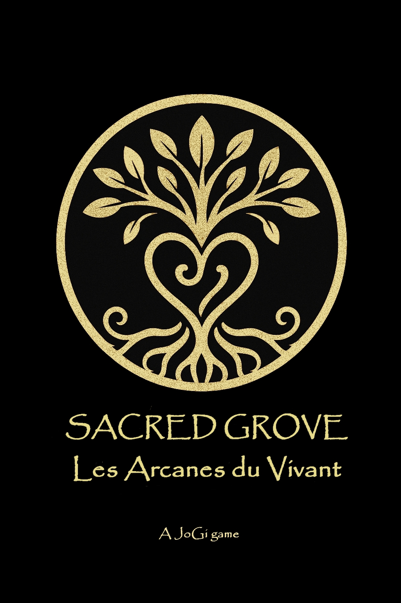
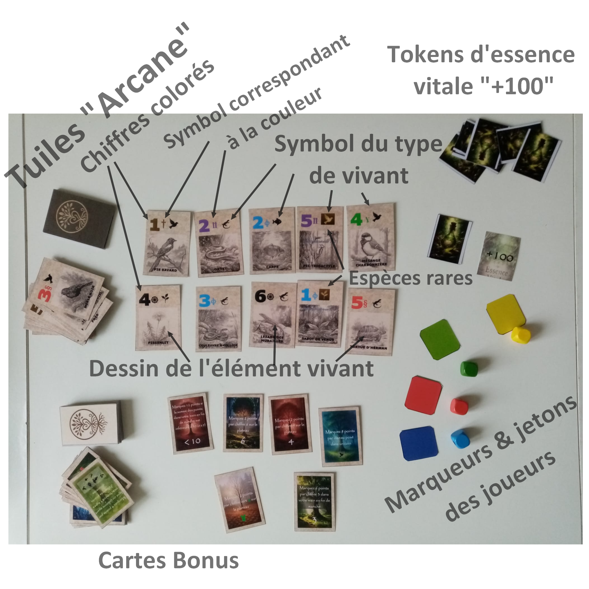
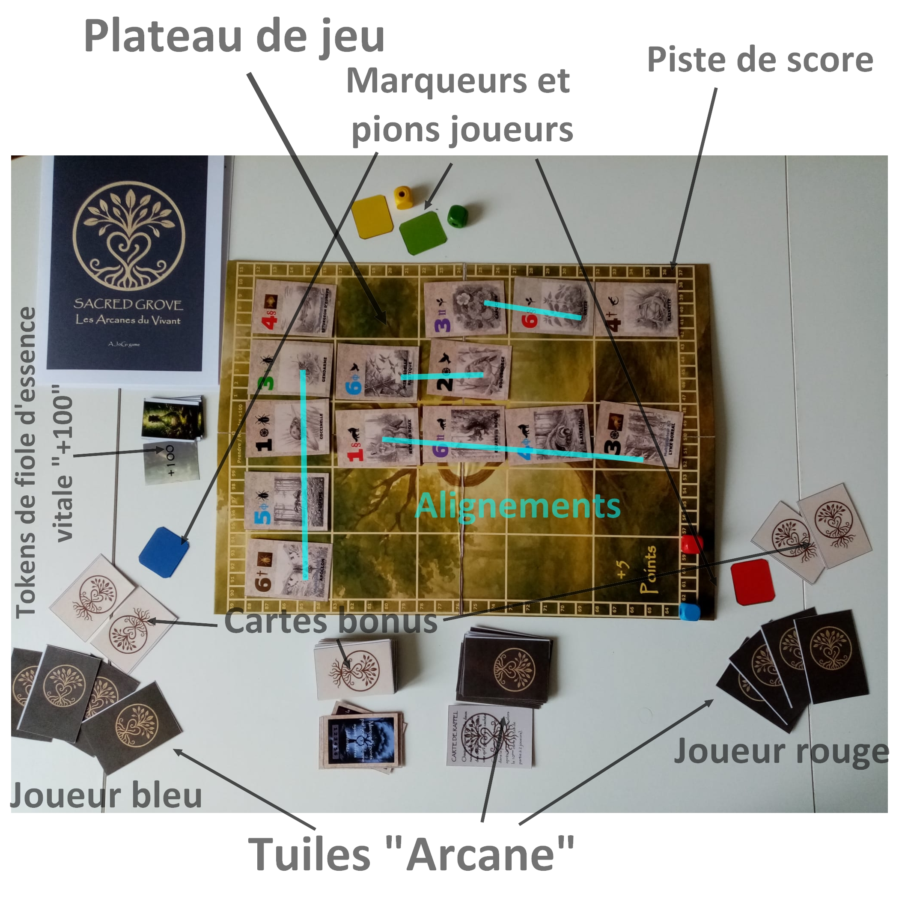
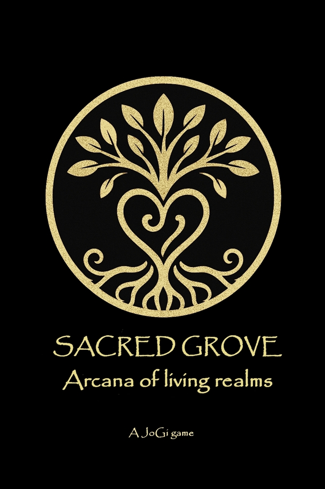
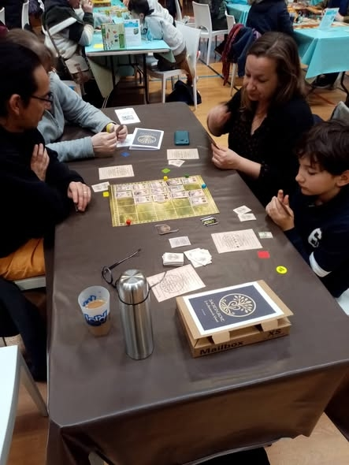
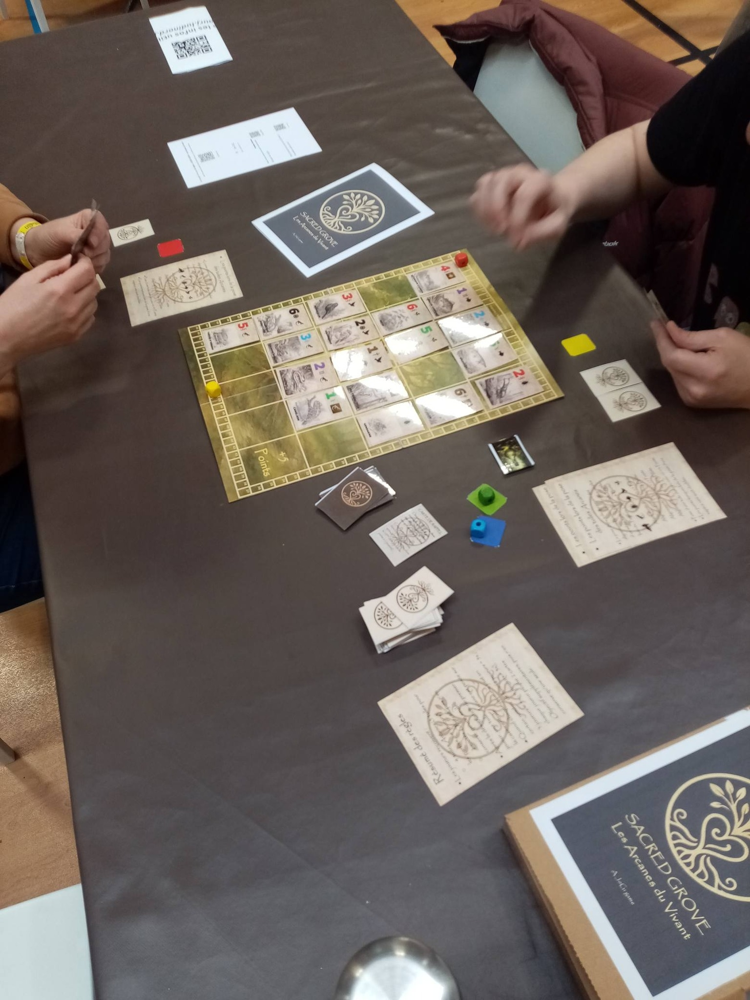
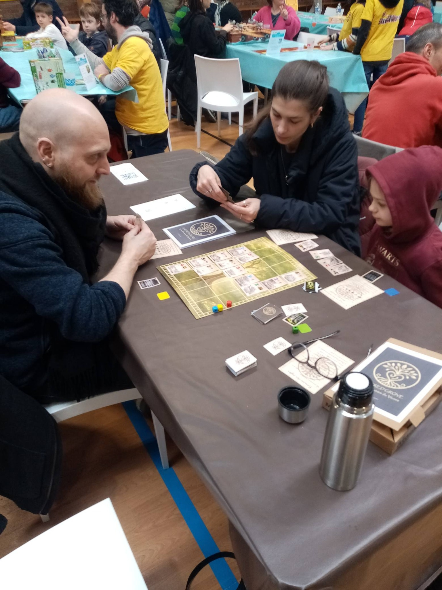
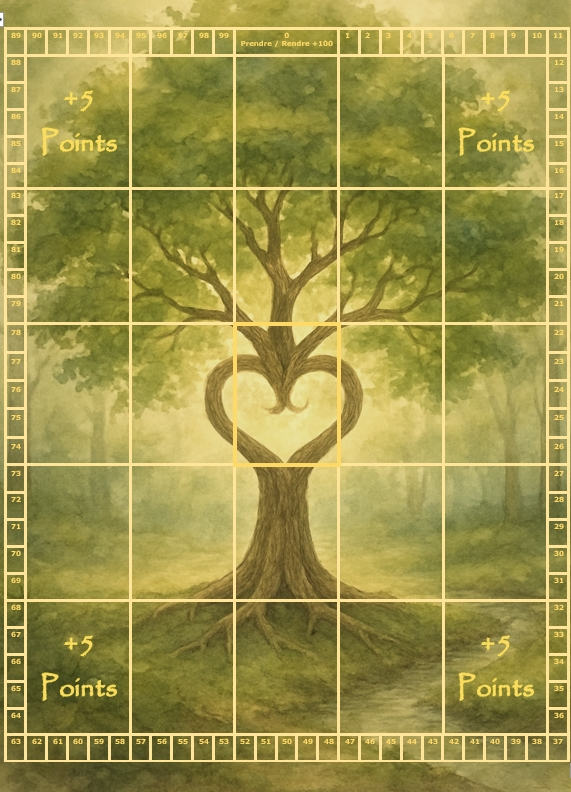

Un jeu mystique centré sur les forces de la vie, où les joueurs explorent un monde à la fois naturel et spirituel. Le placement des tuiles sur un plateau unique influence celles qui seront ajoutées. Un jeu de stratégie pour 2 à 4 joueurs, à partir de 8 ans. Parties rapides de 15 minutes ou parties plus intenses de 30 à 50 minutes, selon le mode de jeu choisi.